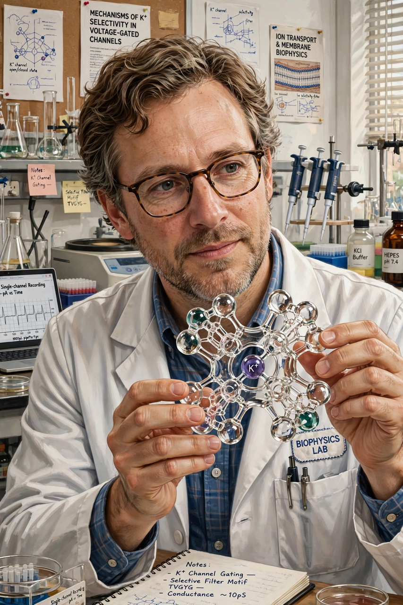

| Roderick MacKinnon | |
| Born | February 19, 1956 Burlington, Massachusetts, U.S. |
|---|---|
| Alma mater | Brandeis University (BS) Tufts University (MD) |
| Known for | Structure and function of ion channels |
| Awards | Nobel Prize in Chemistry (2003) |
| Fields | Biophysics, biochemistry, neuroscience |
| Institutions | Harvard Medical School Rockefeller University |
Roderick MacKinnon (born February 19, 1956) is an American biophysicist, neuroscientist, and businessman. He is a professor of molecular neurobiology and biophysics at Rockefeller University and an investigator of the Howard Hughes Medical Institute. MacKinnon shared the 2003 Nobel Prize in Chemistry with Peter Agre "for discoveries concerning channels in cell membranes"; MacKinnon's share was awarded for his structural and mechanistic studies of ion channels.
MacKinnon was born in Burlington, Massachusetts. As a youth he was an accomplished gymnast and once considered pursuing the sport seriously. He began his undergraduate studies at the University of Massachusetts Boston before transferring to Brandeis University, where he earned his bachelor's degree in biochemistry in 1978, working in the laboratory of Christopher Miller on ion transport. He received his medical degree from Tufts University School of Medicine, then completed a residency in internal medicine at Beth Israel Hospital in Boston.
After his medical training, MacKinnon returned to Christopher Miller's laboratory at Brandeis as a postdoctoral fellow, studying how scorpion venom toxins block potassium channels. He joined the faculty of Harvard Medical School in 1989, where he moved progressively from neurobiology toward structural biology. In 1996 he moved to Rockefeller University in New York.
MacKinnon's landmark achievement was the first high-resolution crystal structure of an ion channel: the bacterial potassium channel KcsA from Streptomyces lividans, published in 1998. The structure revealed the selectivity filter — a narrow region lined with carbonyl oxygen atoms that mimics the hydration shell of a potassium ion, explaining how channels pass K+ ions rapidly while excluding the smaller Na+ ions. His group went on to solve structures of voltage-gated potassium channels, calcium-activated potassium channels, and the chloride channel, and later turned to TRP channels involved in temperature and pain sensation.
MacKinnon co-founded companies applying ion-channel science to drug discovery and to the development of low-calorie sweeteners that act on taste receptors, including work inspired by the structure of sweet taste receptors.
In addition to the Nobel Prize, MacKinnon received the Albert Lasker Award for Basic Medical Research (1999, shared with Clay Armstrong and Bertil Hille), the Gairdner Foundation International Award, and election to the National Academy of Sciences.